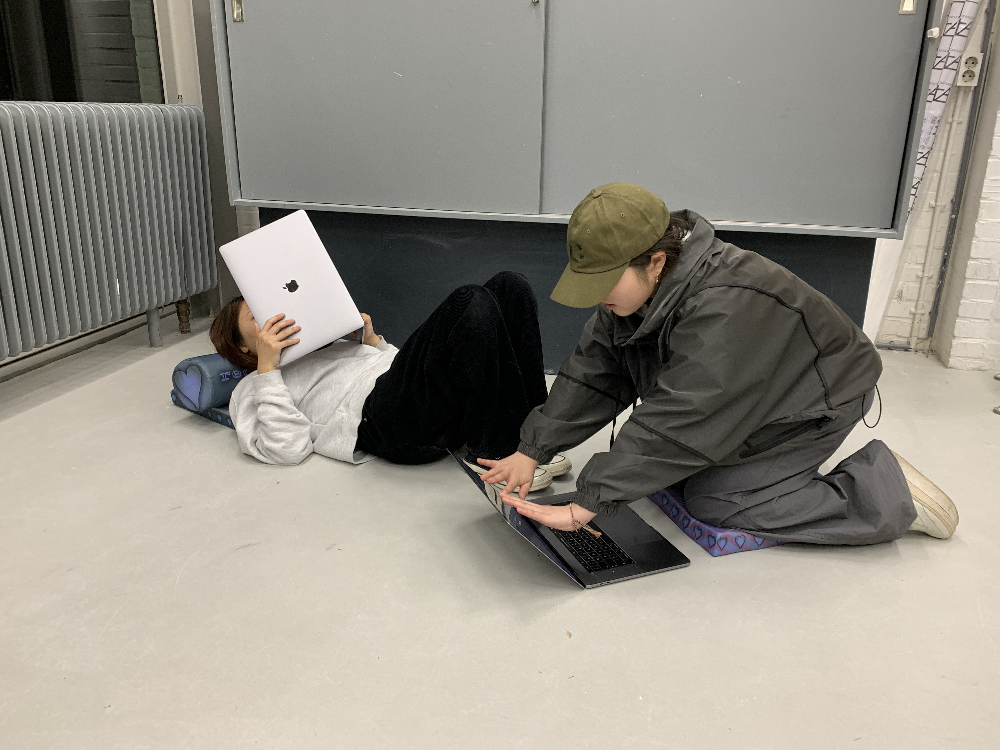
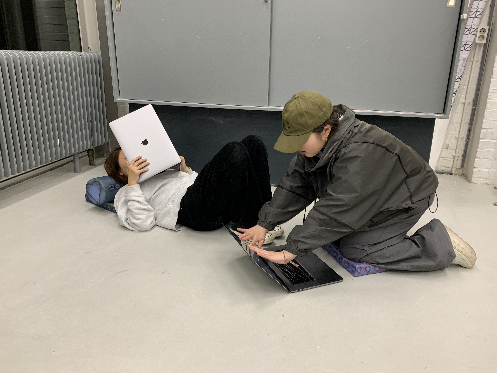
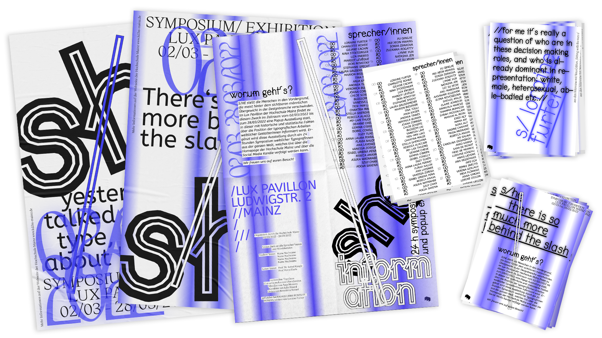
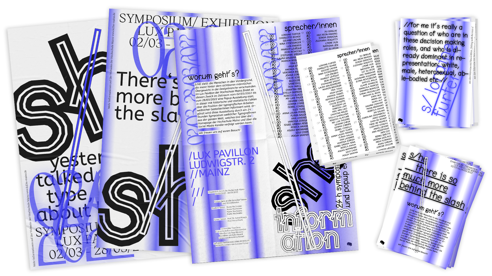

The digital space has to be rebuilt with love by default!
Technology has shaped the house we are forced to live in today and its design is influencing us ((Ursula Franklin, The Real World of Technology)).
Digital space is built far too strongly on the capitalist idea. It is not tailored to our needs and that also includes having a place for selfcare. Using the existing energies of the technological environment, local.recreation-area provides a space to rest and reset.
If you are aware that your physical movements are displayed on a digital screen, would you move differently?
Digital space is a viscous mass in which our bodies are trapped.
We are not free in a world we imagine as a boundless space with infinite possibilities of movement. The digital surface as a mirror forces us to simultaneously rethink and evaluate our movements (online meetings) or to execute them according to preliminary considerations (vlogs on YouTube). We have lost the naturalness in our movements. The digital space is a stage, movements become choreography.


Bodies do not have only one shape and are not geometric at all!
Flat is dead is a critical approach of window-influenced web content in comparison to Tupperware.
The transition from the analog world to the digital is rectangular. Why is the web reduced to this rigid two-dimensional shape? Compared to Tupperware, web content is dependent on external form, with Tupperware being more advanced in its development. If the web content needs to be adapted to the web browser, Tupperware has been adapted to the content as a package.
Connection through RISO Prints on Open Day 2022 at the Graphic Design Departement in Arnhem.

A Radical Anthropocentrism as Prophylactic Speculation
"I do not believe what modern philosophy says about mankind, that we are beings similar to a kind of Pac-Man, eating up the universe. I think we are ultra-sensitive chameleons which can take on the colour of other things."
((Timothy Morton, 02.03.2019))
Wouldn't it be more efficient to change ourselves to be independent from the environment. Thinking about evolution, why can't we decide what color we're going to adopt/wear next? Why don't we program the future by anticipatory adaptation of our human bodies to the unstoppable future changes in our environment? Why don't we get ahead of evolution? Why not become independent of evolutionary changes?
un confortable
Having a sense of space means being aware of its limits. We want to challenge this feeling by projecting a space in moving angles and in multiple recordings.
Collaboration with Stella Bechtel and Judith Berger.
Shown in the group exhibition "Licht Raum Kunst", November 2022, Lulu Galerie Mainz
 

What's behind the slash?
The issue of the participation and visibility of all designers in typography and type design is increasingly being discussed. For far too long, the focus
has been mainly on male designers. If you can't be heard, you have to be louder! With this maxim, two fellow students and I developed the concept of the pop-up exhibition and 24-hour symposium. With S/he we demand more attention for all those who are behind the slash.
Collaboration with Saehyeen Shin and Silvia Castillo.

The heritage of vision
Considering Franco Berardi's review of our world as "the century with no future", the reduction of our space to 1.50 meters during the Covid-19 crisis awakes sleeping skills of dreaming and imagining alternative realities. The future as a passive experience has evolved into a reality full of visions for the future. During lockdown many of us found the time to reflect on their own situation and to redefine their secret desires and hopes for the future. We want to preserve this little flame of revolutionary energy of those past times and let visionary thoughts continue to flourish at least in this protected personal breeding ground of pandemic dreams.
Collaboration with Julia Kerres.
Now the university's own online store shop.designinmainz.de has a mobile kiosk. Light, compact and detachable it offers a presentation and sales area for the products. In cooperation with two fellow students, we developed the kiosk from first sketches to the finished construction and additionally designed the shop's own sales material. My role within the project was to conceptualize the final design and the construction of the Design(Kiosk). Collaboration with Seahyeen Shin and Julia Kerres.